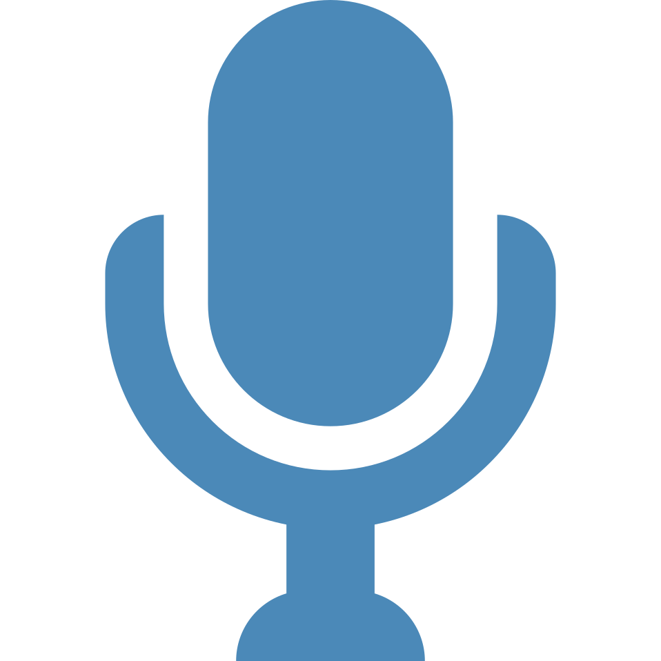

<ion-header>
  <ion-navbar transparent>
  </ion-navbar>
</ion-header>

<ion-content padding fullscreen>

  <h1>Bem vindo ao Modo Carreira</h1>

  <section>

    <h1 [attr.class]="titleAnswer">Qual dessas cores você prefere?</h1>

    <div>
      <span [attr.class]="leftResponse">
        {{leftColor?.text}}
      </span>
      <span [attr.class]="rightResponse">
        {{rightColor?.text}}
      </span>
    </div>

    <h2>*Pressione o microfone e fale sua resposta <b>em Inglês</b></h2>

  </section>
</ion-content>

<ion-footer>
  <div>
    <div class="object">
      <div [attr.class]="micActive">
      </div>
      <div [attr.class]="micActive" id="delayed">
      </div>
      <div class="button">
      </div>
      <div class="button" id="circlein" tappable (click)="openMic($event)">
        
      </div>
    </div>
  </div>
</ion-footer>
